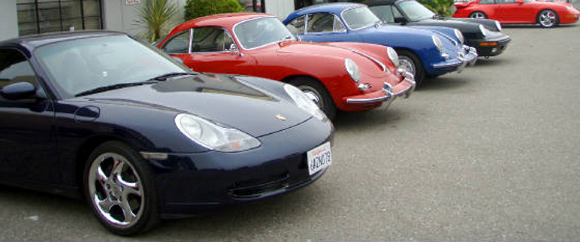
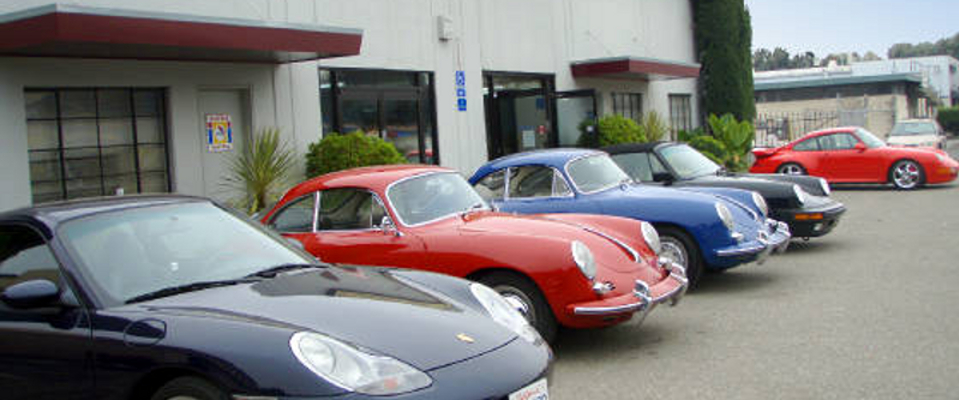
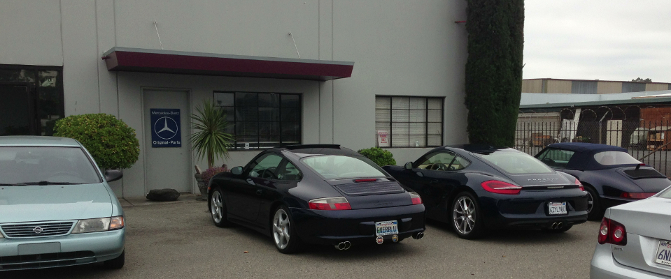
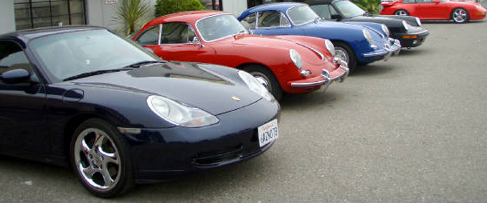
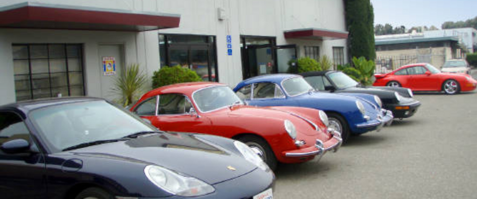
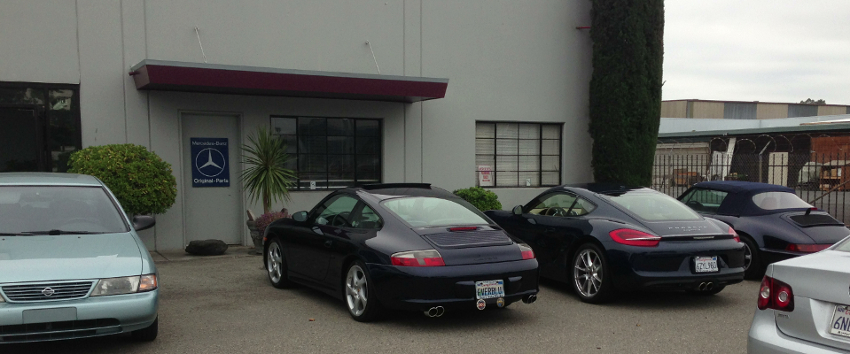

Our Philosophy
We use the highest quality products and services for all of our customers. We recommend only factory manufactured replacement parts and use only Glasurit paint; the highest quality factory recommended paint and associated materials. We stress the highest possible color match and texture standards. Our customers are my greatest assets! My crew and I are dedicated to serving their individual needs.
Our History
Started by Mr. Cecil Beach in 1976, Bodystyle was originally a Porsche-exclusive body repair shop. Eventually, due to high customer requests, the business expanded to include other fine auto manufacturers, such as Mercedes Benz, BMW, Audi, Lexus, and other fine Imports and American Vehicles. Today, we consider ourselves the Bay Area's leading European auto body service center. My Philosophy is I believe in the highest quality products and services for all of my customers, I recommend only factory- manufactured replacement parts. I use only Glasurit paint; the highest quality factory recommended paint and associated materials. I stress the highest possible color match and texture standards. My customers are my greatest assets! My crew and I are dedicated to serving their individual needs.
Our Services
Auto Body Repair
- Frame Straightening, panel repair, panel replacement, rest removal, mechanical repairs
Full Factory Refinishing and Painting
- Utilizing only Glasurit paint products matched to factory specifications and other OEM Products
Full Authorized Frame Repair
- Utilizing Celette Bench and Fixtures: Approved repair systems for Porsche, Mercedes, BMW and other Auto Manufactures